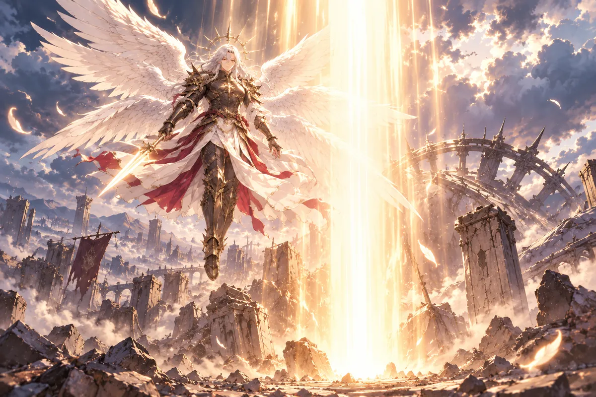

大寶最近常在照相館多坐一會兒。
鏡頭擦好了，預約簿也收了，仍盯著桌面發呆。不是不想回家，是怕小雨一眼便看出他沒睡好，怕咪咪又把鼻子湊過來，問爸爸為什麼有難過的味道。
黑糖陪在門邊，不催。
大寶站起來，摸摸牠的頭。手摸過去，那對耳朵便稍稍放低。
「走吧。有人等我們。」
街燈照出兩個影子。他把鑰匙收進口袋，盡量走得像平常一樣。家門還亮著，小雨的聲音從裡頭傳來，說飯要涼了。
他答知道，這就來。
＊ ＊ ＊
語彤休假，仍在研究卜卦。
她沒有師父的靈瞳，怕牽錯一段緣，害別人的一生也跟著錯。老闆在庭園坐下，說月老剛成神，也常犯錯。
紙上有她反覆寫過的判斷，卦象一項項排開，看得越久，原本覺得能答的事又多出另一種可能。語彤圈過一處，接著又怕這個圈只說明自己沒看懂。
休假不是沒事情做，她本來可以放下，心裡卻總有一個聲音問，若明天來的客人正好遇上自己沒學會的地方怎麼辦。
阿志坐下，沒有先檢查她錯了幾項。他講師父也會錯，語彤便抬頭，像終於聽到一個能讓自己暫時從紙上出來的訊息。
師父活得久，又有靈瞳，她一直把他做得到的當成自己本來就該做到。如今乾爹肯把神明剛開始的樣子講出來，才讓那份高得看不到起頭的本事，慢慢有了一段也是學過、闖過的來路。
「真的假的？」
他講起兩位新神跑去印度，騎聖牛南迪，最後被聖域拒絕入境。
觀音拿著通知，質問華佗。醫神辯解，是牛說要帶他去聖泉。帶去，不代表可以騎著去，觀音說，再問月老為何不攔。
兩個人互推責任，還講起兄弟與投名狀，弄得觀音只想叫他們成熟一點。

觀音手裡的通知很正式，兩位新神的回答卻一個比一個想把自己放到被帶去的那一邊。華佗說牛願意，月老說兄弟，總之都希望那條真正踩過的規矩不要只算自己。
語彤聽乾爹講，忍不住想像師父在女神面前站得怎樣。平日在店裡會擺老師的架子，到了這種場面，竟也有不敢把話接得太滿的時候。
阿志沒有把闖禍說成值得學的本事。騎聖牛確實讓他們被拒絕入境，解釋再多，通知也仍在觀音手上。
只是神明不是從第一天就知道所有地方怎樣走，所有好意怎樣接。有時候以為得到允許的，只是其中一部分，真正犯了錯，才得重新學怎樣問清。這份來路讓語彤再笑時，已經少了先前那種怕自己永遠不夠好的緊。
語彤很難想像師父那副樣子，卻逐漸笑了。
不只是人，神也會錯。老闆要她別把每一個失誤都預先算成災難。
那趟闖禍，也留下成果。
華佗看到快樂的人跳舞，不快樂的人也跳，想到能否讓符文隨歌舞發生。耳機難做，一次只能給一人，舞卻能傳給許多人。
語彤把筆拿回來，這次不是立刻去補那個圈。她先記華佗怎麼想，從看見別人跳，到想到符文，並沒有一開始就知道會變成如今的忘憂舞。
耳機能做的有限，醫神沒有因為那是自己已會的東西，就只繼續做耳機。他肯換一個方向，才讓狐姬、安恆與怡曼後來都學到同一支舞。
師父也去閉關。乾爹說少出門少挨拳，她聽得笑，仍知道那段時間確實用在研究穩定姻緣，後來別人才能來店裡，將文印做成自己的約定。
她低頭再看卦，錯誤還在，沒有因聽完故事便自己改好。可如今能將不懂的地方指給乾爹，先問這一處，而不是在心裡直接替自己下一個會害人一生的結論。
月老於是也閉關研究穩定姻緣的術。至少，少出門，便少挨觀音又快又狠的拳。
語彤低頭看自己的卦。她把算錯的地方圈起來，請乾爹再幫她看一次。
＊ ＊ ＊
遠古戰場，天空像被撕開。
路西法說克蘇魯已敗，邪神帝卻問，難道不怕詛咒。天族最強戰士抬頭，對面那顆刻滿符文的球，隨即落下。
祝融趕來，沒有與大部隊撤退。

夢裡的地面不穩，遠處那些本來有隊形的身影已往後走。祝融看見路西法還在，握槍的手便沒有跟著退。
他知道眼前不是一場只靠勇氣就能打贏的仗，也聽得見大部隊離去的聲音。可那位能並肩的人沒有離開，他便先將自己的位置留在旁邊。
符文刻滿的球落下，光與影混在一起，讓人很難再用眼睛分清哪一處是可以接近的力量。名字從夢裡傳來，不像大寶平日聽過的任何呼救，卻仍讓他知道有人必須留下。
他想動，身子卻不完全由自己決定。夢總在這種時候將他推得更近，近到那股落下的威脅彷彿不是遠古的故事，而是下一刻就會碰到身邊的人。
能與大天使並肩，是半神隊長的光榮。他握槍往前，火與影把身形吞去，神明的聲音遠得像從很久以前傳來，卻又近到就在耳邊。
＊ ＊ ＊
大寶猛地醒了。
房間暗，身上的冷汗卻分外清楚。小雨仍睡著，呼吸平穩，咪咪蜷在附近。他先看她們，確認一遍，又確認一遍。
這個夢不是第一次。
小時候，大地震之前，也夢過。
那份相似讓他不能只當作最近太累。小時候見過的夢沒有成為一段他能完整說明的記憶，恐懼卻留下了，等失去真的來到，又讓醒來的一切都像早被某個無法理解的東西提醒過。
如今他有一個家，有小雨，有咪咪，日子好得讓人不捨得多說一句不吉利的話。偏偏越有了這些，夜裡醒來就越怕眼前的安靜只是暫時還沒被帶走。
大寶沒有馬上將小雨叫醒。他怕她問，自己又只能說夢，不知從哪一個名字講起，也不知怎樣解釋為何那麼確定不該當成普通夢。
他伸手，先碰到咪咪。貓的溫度在掌心，讓他暫時還能確認，這裡不是那片被火與影吞掉的地面。
他摸貓，掌心還抖。夢裡的人，他不該認得，那片戰場，也不是消防員去過的任何地方。偏偏醒來的恐懼，與那些真的發生過的失去如此相像。
「你們不能再有事。」
他低聲說，怕吵醒小雨，又怕不說便守不住。
說完，沒有誰替他應一聲一定不會。小雨睡著，咪咪蹭手，家裡那些他最熟悉的回應都還在，卻不能給未來立一份保證。
大寶坐了一會兒，將呼吸壓慢，免得連摸貓的動作也讓她察覺緊。他以前能進入火場，知道怎麼做、怎麼揹人出去，眼前這場沒由來的夢，卻沒有一扇可推開的門。
天色還暗，他沒再躺下。若閉眼又回到那片戰場，醒來便得重新確認她們一次。
咪咪把頭移近，他順著摸，手指終於沒那麼抖。夢的來處不知道，自己為何會夢也不知道；這一刻能做的，只是讓懷裡的貓睡穩，守著旁邊那個人，等天亮以後再努力過一個像平常的早晨。
＊ ＊ ＊
小雨獨自去甜食屋拉貨。
七號問大寶呢。她說最近睡不好，一早被吵醒，就再也睡不回去。七號讓她打烊來拿安神甜點。
小雨把要拉的貨確認一遍，話題到了大寶，語氣才多一點擔心。他沒說到底夢見什麼，她也不想一早就逼他講，先讓他在家休息，店裡能做的事由自己接。
七號聽見，沒有隻說放輕鬆。他知道甜點能幫哪一種情緒，便將可以拿的一份說清，讓小雨打烊後不必再另找辦法。
她答好，伸手比了個讚。這個小小的安排至少能帶回家，不能讓夢消失，也能讓大寶有一個比較容易睡下的晚上。
貨一份份放進推車，七號幫忙看邊緣會不會撞。兩個人做得很熟，說話與動手都不必停，只是在看向另一邊時，日常的輕快又稍稍收住。
「感恩的心。」她笑著說，又問孟婆。
陰曼仍坐著，一整天沒話。
她不忙著招呼，也沒有對小雨看來的目光說什麼。店裡有人進出，香氣照常在，平日最會將一份甜放到人眼前的人，如今卻像仍停在花海合攏的那一刻。
小雨不知該怎麼安慰。月老沒回來，陰曼剛記起的名字也沒有能好好繼續往下講的物件，勸出去走走，未必就能讓她願意起身。
七號在旁，將眼前的客人照顧好，沒有要誰立刻接下孟婆難過的部分。小雨望過一眼，才轉回自己的貨。
木箱放穩，她把遺願馬卡龍留到方便拿的位置。這些東西還要讓今天來的客人吃到，她不能因為不知道怎樣安慰眼前的人，就連自己能做的事也停在原地。
小雨望過去，沒有貿然上前。把遺願馬卡龍放好，推車出門，今天還得開店。
華佗正好路過，停住腳步。
她的靈氣弱了。
「你去妹妹那裡住？」九尾問。
華佗沒有立刻答，目光還在小雨離去的方向。
「喂，我在跟你說話。」
他回過頭。「我聽到了。」
九尾看著他的臉。「那你剛才怎麼了？」
華佗搖頭，嘴角沒有平常的笑。
「不是累？」
「不是。」
他又望了一眼街角。那股氣息，他認得，卻寧願自己這一次認錯。
九尾以為，有經驗，總能治。
「我沒治好。」
回憶裡，矇眼的白髮男人坐在診療前。他叫華佗放棄，說這種咒不是他能清除的。
治療時，華佗感受到壓了萬年的孤寂。那不是普通傷口，刀進不去，藥也抵不到，靈魂像在很遠的地方一直獨自站著。
華佗曾經試，並不只因為對方叫放棄便立即收手。醫者見到痛，總得先確認還能從哪裡進，能讓哪一部分鬆一點。
可那份孤寂沒有一個可以切開的邊。壓在靈魂上的時間太長，長得他的診療像只能碰到最外面，裡面仍是一個人從萬年前到如今都沒有能卸下的重量。
白髮男人坐著，矇眼，不需要看見他臉上的努力，也知道那個咒不是眼前醫神能清除的東西。
華佗叫大人，對方要他改。這不只是換個稱呼，天族戰士已留在魔界，成了另一個王國會知道的名字。多年以後醫神再想，仍記得自己的無能並非一次沒能選對藥，而是確實走到力所不及的地方。
他叫路西法大人。
對方卻讓他換稱呼。
如今，已是第一帝國的傲慢魔王。
華佗回望小雨離去的方向。推車已經轉過街角，他卻還站著。九尾問他怎麼了，他搖了搖頭，臉上沒有笑。
＊ ＊ ＊
華佗說，路西法不是因傲慢被放逐。
他自願留在魔界，因體內有天煞孤星。愛得越深，所愛靈魂消亡越快；天族愛世人，他若留在人群裡，便會傷及所有人。
九尾手裡的香停了一下。
愛得越深，消亡越快。九尾聽見，原本以為有經驗總能治的話便沒法接。那不是一種只要避開誰出手便能防的攻擊，連在乎，都可能被拿來傷人。
華佗講路西法為何留下，把自願兩字說清。他沒有用傲慢解釋那份離開，一個愛世人的天族若繼續在人群裡，傷及的便不是只靠自己不談戀愛就能避開的一個人。
九尾看醫神，終於知道方才那句沒治好不是太客氣，也不是故意將事說得嚴重。
她還想問，目光卻被另一邊拉走。妹妹正讓利維坦別跟，這項眼前就能看見的不舒服，一下蓋過那段離自己太遠的萬年孤寂。
＊ ＊ ＊
河堤上，狐姬也正讓利維坦別跟。
魔王問不喜歡哪裡，他改。她便反問，喜歡哪裡，她也改。
這種拒絕，他聽得懂，卻仍沒學會退。
狐姬沒有將答案留得曖昧。你改、我也改，已把原本不願繼續的意思說到再清楚不過，對方若仍問，便不是她少給一個能讓魔王理解的詞。
利維坦看著她，像不願相信救過人、一起吃過飯，最後仍會得到這句。那些經歷對他確實有份量，卻不能替她決定現在該靠近誰。
河堤上的路很寬，狐姬偏偏仍得停下來，轉身，再把拒絕說一遍。九尾看見，眉間的火便不是無緣無故。
她聽過妹妹不願意，也看見對方還跟，身子先往前。華佗要勸，已經來不及將話完整說出，九尾的異界便先讓整段路變了樣子。
九尾眉間冒火。妹妹被纏，什麼傲慢帝國、萬年詛咒，先放一旁。
異界降臨，如墜五里霧。
華佗叫別衝動，已經太晚。狐姬喊姐，利維坦卻叫大姨，錯得讓對方更想踹。
濃霧遮住九尾的氣息。力量差距太大，她必須全力一擊。腳落到魔王身上，對方竟毫髮無傷。
九尾咬牙。醫神這才再次勸，她打不贏。
那一腳已用全力，她感覺到落點，也知道對方沒有受傷。霧能遮住自己的氣息，卻不能將兩者的力量直接換過來。
狐姬喊姐，聲音讓她又看了一眼妹妹。九尾不是為了贏一場好看的仗才出手，只是看到妹妹還被纏，便不能當作魔王強得打不贏，自己就該什麼都不做。
利維坦站著，也終於沒再往狐姬那邊走。華佗說完力量差距，先讓雙方停，這個場面若繼續打，受傷的只會更難收。
九尾還瞪著，狐姬靠近把她拉住。妹妹能伸手，能開口，眼下已經比方才多了一點由自己站好的空間。她不想讓姐姐為此受傷，也沒有因為對方毫髮無傷便收回先前的拒絕。
華佗問他為何還在三途川。
利維坦拍掉衣服上的灰。「我可以解釋。」
九尾仍瞪著他。「你先說。」
狐姬把姐姐拉到身邊。「讓他把話講完。」
「我有讓他講。」九尾看著利維坦，「但我沒有說我會信。」
利維坦站穩，這次沒再用漫畫裡學來的口氣。他看向狐姬，再看九尾，把事情從頭說起。
狐姬沒有替他接話。該由誰講清楚，便讓誰自己講。
＊ ＊ ＊
九尾拿出藍莓香，問妹妹來一根嗎。
狐姬說戒了。
姐姐大驚，妖狐之恥。妹妹只讓她去陽臺，藍莓味臭，別薰房裡。她不想再花功德買香，想多存些，等赤坂來，能帶他到處走。
桌上，粉紅信封仍擺在原位。
九尾看一眼，便知道妹妹存功德是要給誰用。自己手裡的香可以少買，眼前這封信卻不需要換新，狐姬已經把它擺在一個每次望過去都能看見的位置。
戒了，不只是嫌味道。她想將那些本來順手花掉的留住，等赤坂真有機會來，不必每去一處都再想夠不夠。
九尾罵戀愛腦，沒有將信拿起來，也沒有替妹妹說人都見不到還存什麼。嘴上的嫌棄在姐妹之間很熟，真正要碰的事卻仍留給狐姬自己。
陽臺門開了，藍莓香的味道往外去。妹妹把房裡的空氣留乾淨，桌上的粉紅也仍安穩，像一天能做好的事不必很大，只要能讓等到的那一天多一點從容便好。
九尾罵戀愛腦，自己到陽臺去。剛抽兩口，便見樓下利維坦亂丟，立刻又開戰。
那身穿搭，她看得一肚子話，像新宿牛郎發傳單。
九尾從陽臺往下看，先看亂丟的東西，再看利維坦那套得意的打扮。兩種不順眼連到一起，讓她剛坐下的平靜立刻沒了。
魔王抬頭，顯然認為該被欣賞。到了人間與地府，他學了許多自認有用的東西，卻沒學會面對另一個人看完毫不稱讚的時候，怎樣不立刻要求對方再看一次。
華佗站在旁，看見九尾嘴快，也看見利維坦火上來。這兩位若只爭誰更會罵，或許還勉強能停在街邊；一提自己的鞋碼與手術刀，便又將醫神扯進他本來不想擔任的差事。
狐姬靠近姐姐，伸手先捂嘴。不是替誰評定穿搭比較好，只是眼前的人一旦把下一句講出，恐怕又得在她家樓下打一場。
魔王哪受得了，說再批評試試。華佗拉他，別和小女生計較；利維坦說要讓她知道自己的鞋子穿幾號。九尾回敬，等下叫華佗拿手術刀割了他的春袋。
狐姬趕緊捂姐姐的嘴。
「出來認真看本王的穿搭！」
利維坦喊得很大。陽臺上的姐妹擠在一起，華佗站在街邊，對自己被指定為打手深感無奈。他真打不贏，也真不想替任何人的品味主持公道。
狐姬鬆開姐姐，回頭望那封信。
街上的喊聲還在，九尾一口氣沒全罵完，眼睛仍往樓下去。狐姬將門邊的東西理好，沒有隨著魔王要求走出去認真看。
她不是不知道有人對自己好，也不是沒見過利維坦在危急時出手。感謝可以感謝，喜歡卻不能因為對方強、因為替她救過一次命，就被指定成另一個答案。
赤坂的名字安靜留在信裡，沒有到陽臺上與誰爭。狐姬看著，想到會帶他去哪、哪一項功德還沒存夠，那些想像都比樓下的爭吵更像自己要過的日子。
她把信封壓平，沒再拿起重讀。眼前很鬧，屋裡至少還留了一小塊可以讓自己等的人待著的地方，等到將來真的見面，才慢慢把今天也說給他聽。
她存的功德還不多，卻已認真想著將來。眼前的喧鬧，暫時沒有改變那個她等了許久的名字。
＊ ＊ ＊
怪手又運進墓地。
剛有人形的九尾燒壞機器，擋在妹妹前，喊神明不準碰她。華佗坐在怪手上，終於找到意外頻繁的原因，拔出小刀制止。
墓碑後，狐姬躲著。
她探頭，見姐姐還擋在前面，便又退回去。怪手一次次進來，那些原本安靜的地方多了機器聲，九尾每次都得先站出來，才能讓妹妹留在後面。
剛有人形，九尾還沒學會怎樣同一位持刀的神說清。她先喊不準碰，身上的力道也已準備好，像對方若再往前一步，自己就得全用上。
華佗看出工地意外的原因，沒有將機器燒壞全算成要驅走的麻煩。月老在旁，也看見墓碑後那個一直不敢完全出來的小狐妖。
這裡還有她等的東西。若只叫離開，她不會信，也不會因為神明說了便覺得腳下這個地方再沒必要留。月老蹲下來，先讓自己不必從高處對她講話。
月老蹲下來，說那個人的靈魂已不在這裡，他可以幫忙找。
她問會不會騙。
不信，便去稻荷神前立制約。神把承諾說得具體，年幼狐妖才敢抬起眼。
狐姬聽到幫忙找，第一個問題仍是會不會騙。她已經等了一段自己也說不清的日子，不能再只憑一個陌生的人口氣溫柔，就把姐姐一直守的地方放下。
月老沒有笑她不信神。他願意立制約，讓一句可以幫忙找到有見證的地方，不讓小狐妖只能依靠自己會不會看臉。
九尾聽著，氣沒有馬上全收。妹妹抬眼，她才將身子稍稍往旁移，讓那段談話不必永遠隔著自己才繼續。
華佗等在旁，也沒有因為出手被擋便急著收一個聽話的結果。兩個神帶姐妹離開以前，先給出一項她們能確認的承諾。後來修行、後來知道赤坂去向，都得從這一刻終於有一點敢相信開始。
如今，狐姬把手杖交給華佗。陰曼不想出門，請她轉交。當初兩位神帶姐妹來修行，自己才有機會知道赤坂的去向。
這根杖，能找到月老嗎？
華佗沒有保證，說盡力。
它原是他送的賀禮。月老發明文印，已有護體罡氣，丹田卻裝不下多餘靈氣。杖能儲存，危急摔碎，便讓力量自動護人。
月老當時還誤會送禮的意思，強調本人喜歡異性，氣得華佗回嘴。
記憶裡，他們總有許多話。
華佗看杖，禮物送出去以後，曾經被朋友拿來講一句讓人想回嘴的玩笑；如今再回到手裡，卻不是為了續那場爭辯。
「能儲靈氣，也能護體。」華佗說。
狐姬看著他手裡的東西。「那能用它找人嗎？」
「要先確認留下了什麼。」
「如果裡面還有他的——」
「有可能用得上。」
她立刻抬頭。華佗卻沒有讓那個可能變成保證。
「我還不能說，只要施術，他就一定回來。」
狐姬慢慢點頭。「那先看。能查的，先查。」
神識還留一點，這是眼下真正握得到的事。華佗將手放穩，慢慢感受，沒有讓熟悉的往事搶在術之前替自己給出答案。
狐姬在旁等。她將陰曼不想出門的情況說過，將那天自己知道的說過，後面的線索還得繼續問。華佗收好手杖，終於從回憶裡出來，先找出事時在場的人，至少讓這根用來保護朋友的賀禮，再替他們留住一條能夠查下去的路。
現在，華佗把杖握穩，感覺那點尚留的神識。他收起手杖，問狐姬，月老出事那天還有誰在場。